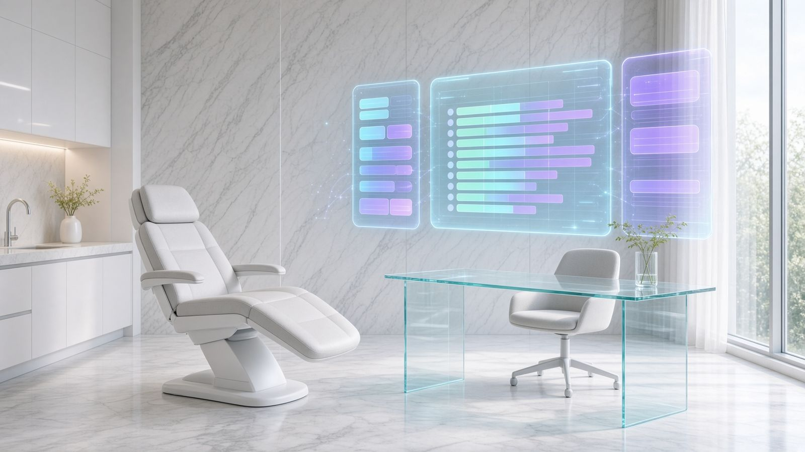

Caminho
O paciente vê o próximo horário sem ligar.
Sistema · Arquitetura de Legado
Cadastro, horário, histórico e o depois da consulta deixam de viver em recado e papel.
Isto é um site de demonstração. Dá para clicar nos horários. Os números são exemplo, para a pessoa ver a casa funcionando. Não são dados de um cliente.

O paciente vê o próximo horário sem ligar.
O que foi feito fica no mesmo lugar.
A agenda não depende de memória.
Toque num horário. Ele entra como reservado só nesta tela, para mostrar o gesto. Nada é gravado e nada cobra.
Números de exemplo, para a leitura da tela. Não são faturamento real.
Reservados agora nesta visita: 0